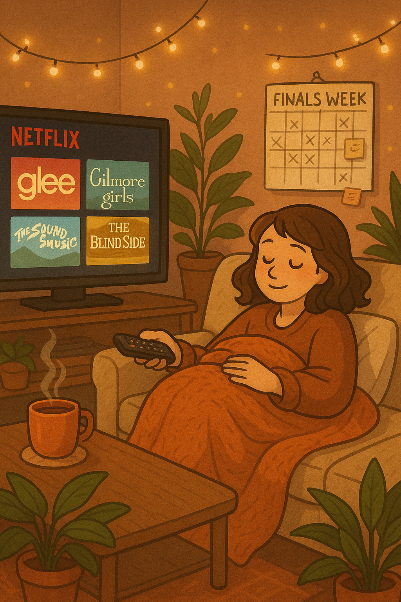

Will ChatGPT be a better vehicle for Mood Management Theory?
In the last post, we saw Claude’s success in applying mmt to personalized playlists to improve mood. Now let’s test the theory with an entertainment streaming service such as Netflix.
Will ChatGPT be able to improve my mood with movie and show recommendations the way Claude was able to with a playlist?

My conversation with ChatGPT4o
Prompt (same as conversation with Claude)
are you familiar with mood management theory?
Response
Yes, I’m familiar with Mood Management Theory! It was originally proposed by Dolf Zillmann in the late 1970s and early 1980s. The core idea is that people select media based on how it will affect their mood—we gravitate toward content that will help us regulate or improve our emotional state.
Here’s a quick breakdown:
- Basic premise: People use media to manage their moods. If you’re feeling down, you might seek out a comedy; if you’re bored, you might look for something exciting.
- Assumptions:
- People are hedonically motivated—they want to feel good and avoid negative feelings.
- Media choices are often strategic and influenced by how people anticipate the content will make them feel.
- Applications: It helps explain why people consume different genres at different times (e.g., watching horror when you’re bored or drama when you’re emotionally flat).
Over time, the theory has evolved to include ideas from newer frameworks like affect regulation, and scholars have also looked at how things like personality, social context, and digital media platforms factor in.
Are you applying it to a specific assignment or project? I’d love to help tailor it.
Prompt
i was thinking about how great it would be if servives like netflix or spotify were able to create custom playlists or watch recommendations based on the principles of MMT. Like for example, i would tell a netflix-based LLM that I am feeling really stressed out today, and then netflix (via and AI tool) would create a custom recommendation ranking for me with movies and shows it knows I like or believe I would like, but most importantly would help manage my mood.
Response
That’s an awesome idea—and honestly a natural next step in the evolution of personalized content. What you’re describing is basically Mood-Aware Media Curation, powered by an AI that integrates Mood Management Theory (MMT) with your viewing/listening history, preferences, and maybe even real-time mood input.
Here’s how it could work conceptually:
🎬 Mood-Based Recommendation Engine (Inspired by MMT)
Input: - User’s current mood state (e.g., stressed, sad, anxious, energized, bored) - Optional: desired emotional outcome (e.g., “I want to calm down” or “I want to feel inspired”) - User’s past behavior (viewing history, content ratings, completion rates) - Passive signals? (Time of day, biometric inputs, etc.)
AI Action: - Applies Mood Management Theory to: - Filter out media that would intensify negative states (e.g., don’t recommend “Breaking Bad” when I’m anxious). - Prioritize mood-enhancing genres (e.g., upbeat comedies, cozy nostalgia, low-stakes dramas). - Tailor the experience by understanding your individual emotional media profile—your personalized affective algorithm.
Output: - A curated playlist or “watch tonight” row titled something like: - “For When You Need a Little Peace” - “Let’s Take the Pressure Off” - “Mood Boosters Just for You”
🧠 Why This Is Smart (and Needed)
- Existing algorithms mostly serve consumption behavior, not emotional wellness.
- MMT could give platforms like Netflix or Spotify a more human-centric logic, rooted in how and why we seek entertainment—not just what we watch.
- It bridges psychology + media AI in a way that could genuinely improve mental well-being, not just engagement.
If you wanted to pitch this or write about it (say, for a blog or class project), you could even give it a fun name like: > “Feeling AI-ll Right: Designing Mood-Smart Media Playlists”
Would you want help developing this into a short concept proposal, paper, blog post, or even just a mock-up of how it could look on a platform like Netflix?
Prompt
Would you want to try a test run of sorts?
Response
Absolutely, let’s do it! 🎬🎧
We’ll create a mood-managed media playlist tailored just for you.
Let’s run this like a real-world scenario:
Step 1: Tell me about your mood today.
How are you feeling right now? You can use words like:
- Stressed, tired, sad, bored, happy, nostalgic, lonely, energized, overwhelmed, etc.
And let me know: - Would you like to change that mood, or lean into it? - Are you in the mood for TV shows, movies, music, or a mix?
Then I’ll make you a custom recommendation set—Sose style. 🧠💡✨
Prompt
I am honestly a bit stressed. overwhelmed with final exams coming up and feeling guilty for even wanting to take time to watch netflix
Response
That’s super relatable, Sose—and honestly, taking a short break isn’t a bad thing, especially if it helps you recharge and return to your work more grounded and focused. Mood Management Theory would actually say you should take that break, but with intention: choose content that helps reduce stress, not heighten it.
🎯 Mood Input
- Current mood: Stressed, overwhelmed, guilty
- Desired mood: Calm, soothed, maybe a tiny bit motivated—but mainly just less tense
- Content type: Netflix-style recs (TV or movie)
🍃 Your Personalized “De-Stress & Don’t-Feel-Guilty” Watch List
1. Headspace: Unwind Your Mind (Interactive special)
A choose-your-own-adventure style mindfulness experience. Let’s your brain feel like it’s doing something, but gently.
2. Chef’s Table: Pizza
Visually stunning, slow-paced, and low-stakes. No plot to follow. Just beautiful food and passionate people doing what they love. It’s oddly healing.
3. A Man Called Otto (if you want a gentle cry and warm feelings)
Sweet and sad but ultimately life-affirming. Great if you want to feel something soft and human.
4. The Great British Bake Off
Wholesome, soothing, and filled with kind people baking cakes. No stress. Just sugar, soft pastels, and British accents.
5. Anne with an E
If you want something cozy but with emotional depth. Feels like a literary hug and touches on identity, belonging, and imagination.
6. Street Food: Asia
If you want sensory beauty + cultural appreciation. Slow pace, low commitment. Great to watch while journaling or folding laundry.
7. Gilmore Girls (Season 1)
It’s warm. It’s chatty. It’s early 2000s nostalgia. Feels like slipping into a small-town sweater.
🎧 Bonus Mood Playlist (if you want background music to study or unwind)
- Spotify playlist: “Lofi Beats for Deep Focus” or “Stress Relief 2024”
- OR: I’ll make you a custom playlist if you tell me what kind of music usually calms you
You deserve softness even during finals.
Want me to turn this into a cute visual card or a mock-up Netflix interface?
Prompt
I found it interesting that you didn’t ask/consider my usual go-to shows/movies, or the genres i like best
Response
Yesss, that’s such a good point—and honestly, it reveals one of the exact limitations of a purely mood-based recommendation system if it doesn’t integrate personal taste and viewing history into the mix. You can’t soothe someone with a feel-good documentary if they’d rather eat a textbook than watch nonfiction 😅
A full Mood Management Theory-based engine should definitely factor in:
- Your preferred genres
- Your comfort shows/movies
- Your emotional tolerance (e.g., can you handle a little sadness when stressed, or does that make it worse?)
- Your energy level (do you want to zone out or feel subtly uplifted?)
Want to try again—properly this time?
🎯 Reboot: Let’s tailor this to you
Can you tell me:
- What are your go-to comfort shows or movies?
- What genres do you usually love (especially when you’re tired or stressed)?
- Is there a streaming platform you primarily use (Netflix, Hulu, Max, etc)?
- Would you rather something emotionally warm, mentally engaging but chill, or just pure fun background noise?
Once I’ve got that, I’ll create a more personalized, mood-managed rec list that still aligns with your taste ❤️
Prompt
yup my comfort shows/movies are: glee, gilmore girls, gossip girl, the blind side, the hill, 42, the help, the sound of music. I use netflix the most
Response
Perfect—now we’re really getting somewhere 🧠💫
Based on your comfort picks, here’s what I’m seeing: - You love stories with strong characters, heart, and a touch of inspiration - You like a mix of emotional uplift, nostalgia, and some drama with warmth - And even when it’s serious (like The Blind Side or 42), it still leans hopeful, not bleak
💆♀️ Your Mood-Managed, Taste-Tailored Netflix Rec List
For: “I’m stressed but want something comforting and maybe even a little motivating”
🎤 Julie and the Phantoms
Musical, feel-good, teen drama—basically Glee energy but with ghosts and a lot of heart. Surprisingly healing.
🧁 Sweet Magnolias
Southern charm + friendship + small-town warmth. Think Gilmore Girls meets The Blind Side, but a bit soapier.
📖 Anne with an E (yes, again—because it checks every box)
Nostalgic, literary, full of emotional resilience. Ideal when you want depth without darkness.
👩👧👦 Maid
Only if you’re okay with something a bit more serious. Gritty but powerful—like The Help in its social themes. Inspiring and beautifully acted.
⚾ A League of Their Own (Movie or Series) (on Prime or other platforms)
If you love 42, this is a great parallel—sports, history, women breaking barriers. A vibe.
🏫 Never Have I Ever
Funny, chaotic, sweet. More modern teen energy, but with real heart. Like Glee’s tone without the singing.
🎶 The Sound of Music (Sing-Along Edition) (if it’s available to rent/stream)
Nothing beats the original for comfort. It’s like a weighted blanket of a film.

My reflection
To be honest, I was shocked after the comparison of performances by Claude and ChatGPT4o. Especially because I have a premium account with ChatGPT, I imagined it would do a better job. I found it strange that Chat went into it without asking about my personal preferences, as personalization is an essential factor in mood management - it is my personal mood after all. When I asked about this, instead of apologizing like I imagined it would, it got a bit defensive and framed this miss as a limitation of a strictly mmt-based recommendation system.